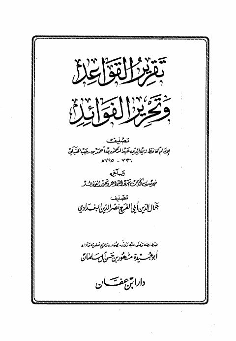

Downloads need an internet connection.
تقرير القواعد وتحرير الفوائد
Authors: ابن رجب الحنبلي
Editors: مشهور بن حسن آل سلمان
Publishers: دار ابن عفان
**▫️ العنوان: تقرير القواعد وتحرير الفوائد** ▪️ المؤلف: #عبد_الرحمن_بن_أحمد_بن_رجب_الحنبلي ▫️ المحقق: #مشهور_بن_حسن_آل_سلمان ▪️ الناشر: #دار_ابن_عفان ▫️ بلد النشر: الخبر، #السعودية ▪️ الطبعة: 1 ▫️ عدد الأجزاء: 3 ▪️ الصفحات: 1883 ▫️ نوع الوعاء: #كتاب ▪️ التصنيف الرئيسي: #العلماء_والمفكرون ۪